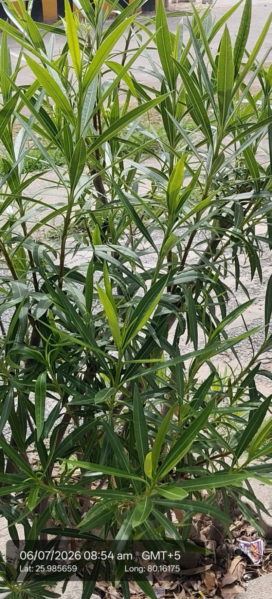

| Scientific name | Thevetia peruviana |
|---|---|
| Family | Apocynaceae |
| Category | Shrubs |
Habitat & Growing Conditions
- Native to Central and South America. Widely planted across India
- Very common in UP including Kanpur area at your coordinates. Found along roadsides, parks, and institutional campuses like in your photo
- Thrives in tropical to subtropical climate. Highly drought and heat tolerant
- Grows in well-drained soil. Needs full sun
- Evergreen small tree, 3-6 m tall. Leaves are narrow, linear, glossy, and arranged alternately like you can see. Flowers are funnel-shaped, yellow, pink, or white. Fruit is green turning black, round and nut-like, visible in your photo

Economic Importance
- Ornamental: Popular for roadside planting and landscaping because it flowers year-round and needs very little water
- Tolerates pollution and poor soils. Good for urban greening and avenue planting
Medicinal Importance
- Bark, leaves, and seeds used in traditional medicine for skin diseases and as a heart stimulant. Contains cardiac glycosides. Important: All parts, especially seeds and milky sap, are highly toxic if ingested. Can be fatal. Handle with care. Note: Consult a healthcare professional before any medicinal use
Field Notes
- Synonym: Cascabela thevetia
- Seed oil is used for soap making and as biodiesel. Seed cake used as organic pesticide. Wood used for small implements